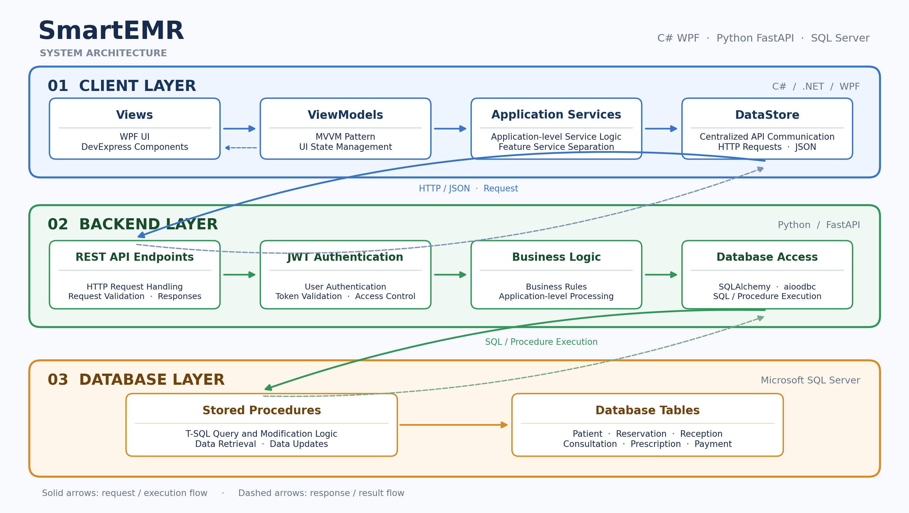
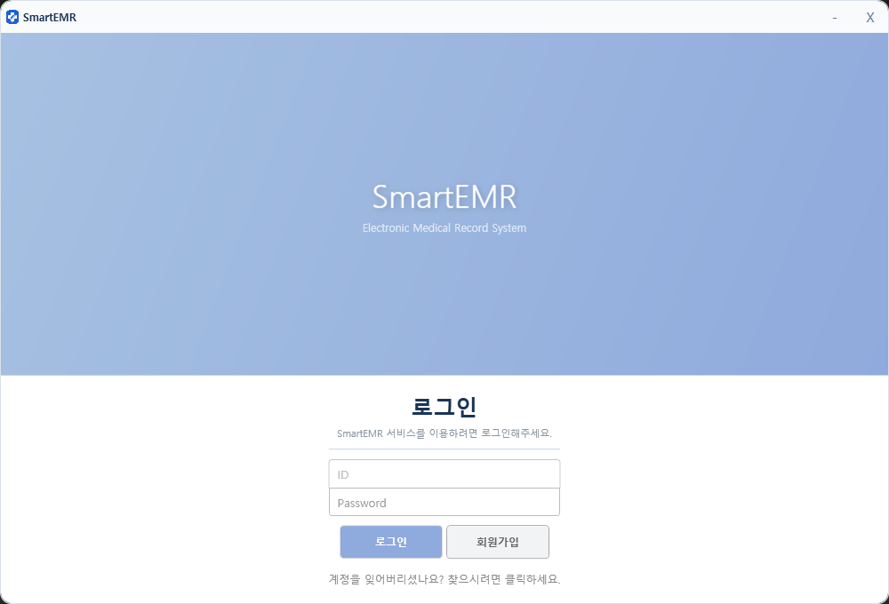
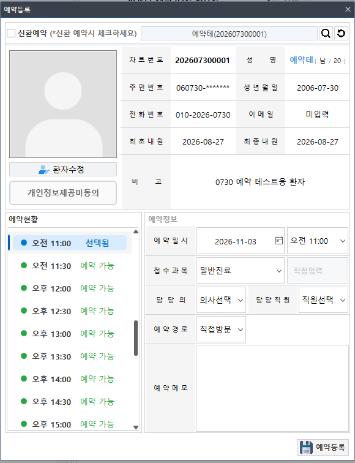
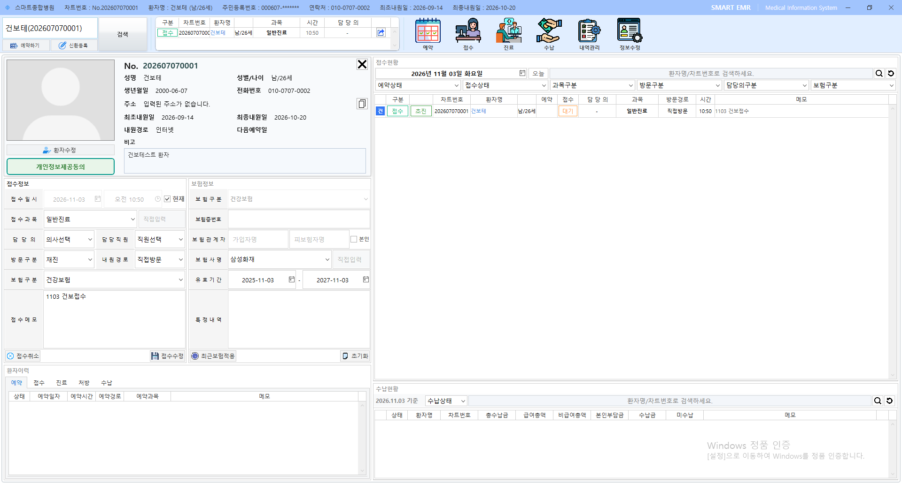
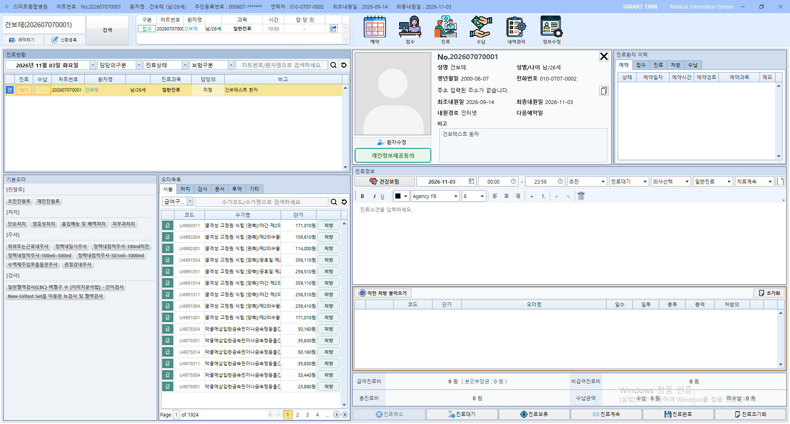
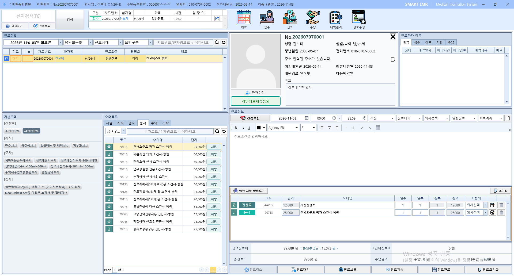
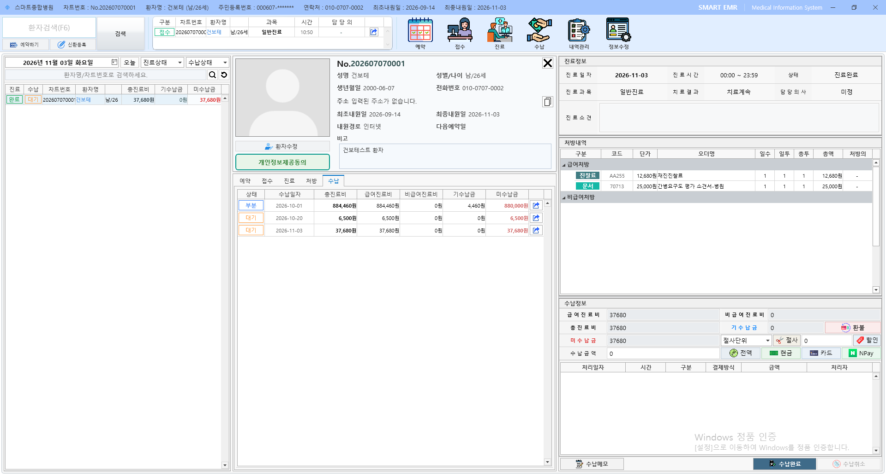

Client
C# 기반 WPF 데스크톱 애플리케이션
SmartEMR 은 환자 관리부터 예약, 접수, 진료, 처방 및 수납까지 이어지는 의료기관의 업무 흐름을
관리하기 위해 개발한 개인 프로젝트입니다.
WPF 클라이언트와 FastAPI 벡엔드를 분리하고, SQL Server 를 통해 데이터를 관리하도록 구성했습니다.
실제 의료정보 시스템 개발 및 유지보수 경험을 바탕으로 업무 흐름을 재구성했습니다.
프로젝트 기획, 데이터베이스 설계, WPF 클라이언트 개발, FastAPI 백엔드 개발 및 연동
C# 기반 WPF 데스크톱 애플리케이션
HTTP API 및 인증·업무 로직 처리
관계형 데이터 관리 및 개발 도구
환자 정보를 중심으로 예약,접수,진료,처방,수납으로 이어지는 의료 업무 프로세스를 구현했습니다.
환자 등록·수정, 검색 및 이력 조회
예약 등록·수정, 캘린더 기반 예약 현황 및 이력 조회
접수 등록·수정 및 접수 이력 조회
접수와 진료 간 연계, 진료 정보 저장 및 이력 조회
진료 처방 등록·수정 및 처방 이력 조회
진료 단위 수납 정보 관리 및 결제 처리
WebView2를 활용해 네이버페이 결제 화면을 WPF 클라이언트와 연동하고, 승인 결과를 내부 수납 데이터에 반영하도록 구현했습니다.
클라이언트, 백엔드, 데이터베이스의 역할을 분리한 3계층 구조입니다.

WPF Client ↔ FastAPI Backend ↔ Microsoft SQL Server
실제 프로그램 화면 캡처를 추가해 구현 결과를 확인할 수 있도록 구성하세요.
로그인 화면

예약 화면

접수 화면

진료 화면

처방(진료) 화면

수납 화면

소스 코드와 상세 문서를 확인할 수 있는 링크를 모아두는 영역입니다.
* 클라이언트 소스 코드는 별도 관리 정책에 따라 비공개로 유지하고 있으며, 주요 구현 내용은 본 포트폴리오에서 확인하실 수 있습니다.
※ 공개 저장소에 올리기 전에는 실제 서비스 계정, 인증 정보, API 키, 개인정보 및 운영 데이터가 포함되지 않았는지 확인하세요.